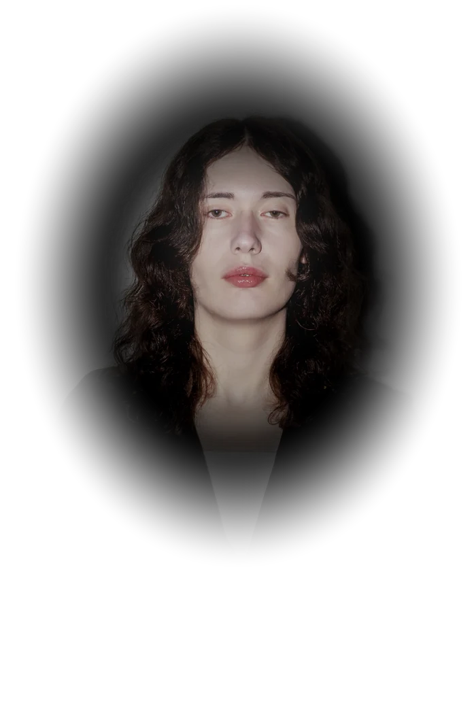

{{ person.name | escape }}
{{ links.page.tagline | escape }}
-
{%- for row in links.rows %}
{%- assign is_external = false -%}
{%- if row.profile -%}
{%- assign profile = cv.profiles | where: "icon", row.profile | first -%}
{%- assign href = profile.url -%}
{%- assign icon = row.profile -%}
{%- assign is_external = true -%}
{%- elsif row.mailto -%}
{%- assign href = person.email | prepend: "mailto:" -%}
{%- assign icon = row.icon -%}
{%- else -%}
{%- assign href = row.url -%}
{%- assign icon = row.icon -%}
{%- if row.url contains "://" -%}{%- assign is_external = true -%}{%- endif -%}
{%- endif -%}
{%- assign sub = row.sub -%}
{%- if row.mailto and row.sub == nil -%}{%- assign sub = person.email -%}{%- endif %}
- {{ row.label | escape }} {%- if sub %} {{ sub | escape }} {%- endif %} {%- if is_external %} (opens in a new tab) {%- endif %} {%- endfor %}